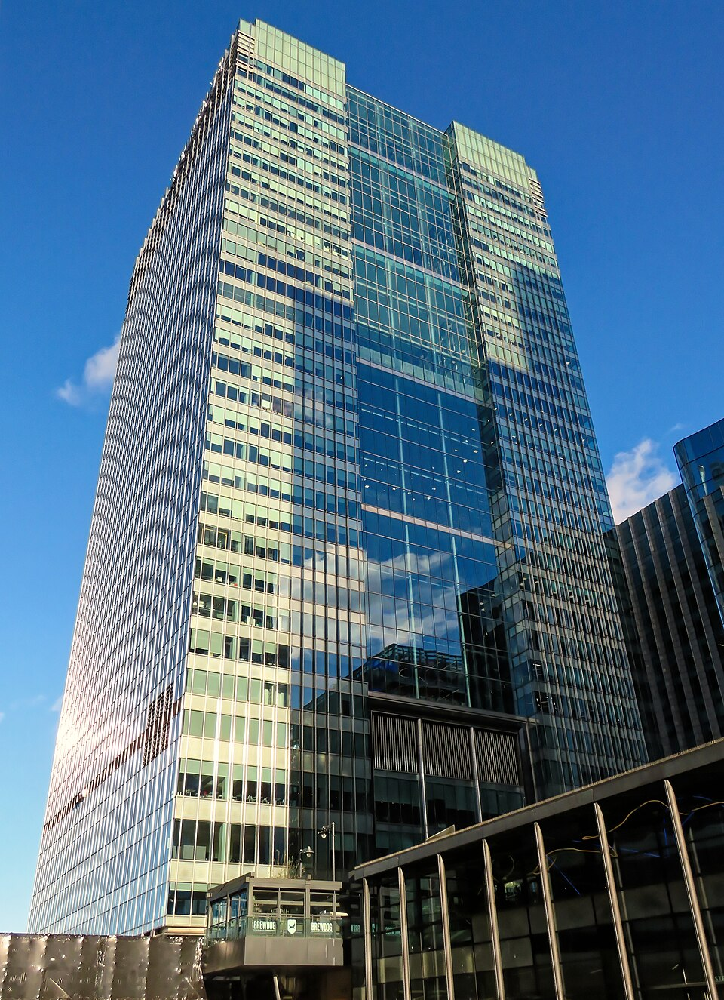
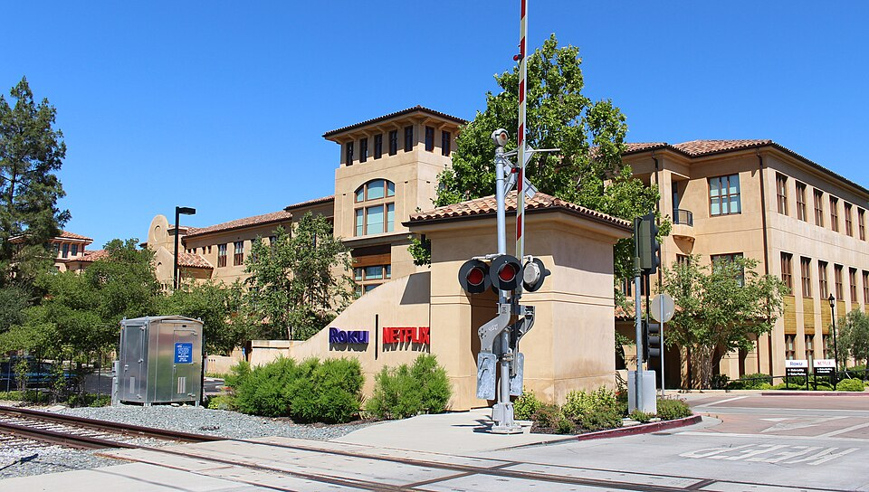

Vol. I · No. 144 · Monday, October 19, 2026 · 12 items · 9.2 min read
Putin wants Ukraine settled by three men in Shenzhen, Anthropic hands a slice of itself to a fund, and Miami charges Raúl Castro with murder.
News · Moscow · cross-spectrum LLLCLRR
Putin floats a Trump-Xi summit to settle Ukraine without Kyiv, as Trump says Zelenskyy “doesn’t want to end this war”
Shenzhen, the likeliest venue for the proposed summit. Fumikas Sagisavas / Wikimedia Commons
Vladimir Putin has proposed a three-way summit with President Trump and Xi Jinping to settle the war in Ukraine, with Volodymyr Zelenskyy left out, The Wall Street Journal reported Sunday night. Putin raised it in his Oct. 9 call with Trump, the call that produced the , and the likeliest venue is the APEC leaders’ meeting in Shenzhen on Nov. 18 and 19. Secretary of State Marco Rubio, in Uzbekistan early Monday, said “there’s been talks of a meeting” but that he did not know whether it was finalized.
“The president is open to anything.”
Secretary of State Marco Rubio, in Uzbekistan, October 19
Trump turned on Kyiv the same night, saying Zelenskyy “doesn’t want to end this war, and probably never did.” Zelenskyy told NBC’s Meet the Press that backing Russia would be a “historic mistake” and told Bloomberg that “steps have been taken to convince Ukraine to capitulate.” He thanked Washington for restoring missile-warning intelligence after a .
The fighting escalated on both sides. Overnight into Monday, Russia fired 16 ballistic missiles at the Kyiv region and more than 200 drones nationwide, hitting over 10 energy facilities and cutting power to at least 550,000 households; Zelenskyy said Ukraine again got no warning. A night earlier Ukraine sent more than 1,000 drones into Russia, and the BBC reported strikes on the and the Ruchyi depot that killed one person. Zelenskyy counts 76 Russian strikes on Ukrainian energy since Trump’s .
AI · San Francisco
Anthropic commits 5 percent of its shares to a public benefit fund that grows with its valuation
Anthropic said Sunday it will commit 5 percent of its shares to a new Anthropic Public Benefit Fund, subject to , with the board able to add 2 percent more for every 50 percent rise in the company’s value above a set baseline. The fund will be a wholly owned LLC rather than a , and none of its equity may fund lobbying or political giving.
The company named labor-market disruption as one use, on top of $200 million already committed, and said the fund might make large gifts to nonprofits or “direct distributions to specific populations.” With the co-founders’ pledge of 80 percent of their equity and an employee match used by about half of staff, roughly 20 percent of shares would go to the public good. Governance and the valuation milestones come “in the coming months,” ahead of a listing reported for November. Reuters, AP and Bloomberg confirmed the announcement.
Law · Miami · South Florida
A Miami-Dade judge signs a state murder-conspiracy warrant for Raúl Castro over the 1996 shootdown
A Miami-Dade judge has signed a state warrant charging Raúl Castro with conspiracy to commit first-degree murder in the 1996 shootdown of two planes, the Miami Herald reported Sunday night. of the 11th Judicial Circuit signed it Friday after an FDLE investigation, and Fox News reported Castro is to be held without bond. It names the four men killed: Carlos Costa, Pablo Morales, Mario de la Peña and Armando Alejandre Jr.
The affidavit roots the case in Florida through two Cuban spies in Miami and Key West who infiltrated the group and passed flight data to Havana; they were told not to fly Feb. 24 to 27, and one returned to Cuba the day before. The will handle it, and Florida will seek extradition if Castro, 95, is arrested elsewhere. The Justice Department indicted him in May. Attorney General James Uthmeier speaks at FIU on Monday.
AI
The grid says no
AI · London
Microsoft walks away from Nscale’s flagship Essex data centre for want of power, weeks after the neocloud filed to list
Microsoft has ended its agreement to anchor Nscale’s planned £2 billion AI data centre in Loughton, Essex, after said it could not supply enough power until the early-to-mid 2030s, the Guardian reported Sunday, following the Telegraph. The site was to hold 23,040 Nvidia GPUs by early 2027, and Microsoft was its only announced customer. Nscale, which filed confidentially for a NYSE listing at about $35 billion, said other contracts are unaffected. Microsoft and Anthropic account for about 85 percent of its contract value, SiliconANGLE reported from the filing.
Markets & Deals
Where the leverage is booked
Corporate · London
Bank of England reviews a claim that Barclays traders understated private-credit risk

One Churchill Place, Canary Wharf. Acabashi / Wikimedia Commons
The Bank of England’s is reviewing an insider complaint that Barclays traders booked on illiquid private-credit loans in a way that cut the bank’s regulatory capital, the Financial Times reported Monday. The complaint, received earlier this year, says the swaps sat in the , which PRA rules restrict for derivatives backed by illiquid collateral.
No amounts were disclosed and Barclays did not immediately comment, Reuters reported. The shares fell about 2 percent in early London trading, to around 424 pence. The report follows a week in which loans tied to AI data centres were quoted well below par and Goldman Sachs told clients that AI and hyperscaler credit spreads sit at their “widest levels of the year.”
Corporate · Sydney
EQT agrees a A$9.3 billion take-private of Cleanaway as Dai-ichi Life bids for Challenger
EQT agreed to buy Cleanaway, Australia’s largest waste manager, for A$3.095 a share, an enterprise value of about A$9.3 billion (US$6.5 billion) and a 32.1 percent premium to the undisturbed price, through a . Japan’s then proposed A$11.80 a share for the rest of Challenger, the annuities provider, valuing it at A$7.94 billion; the offer is non-binding, Reuters reported. Neither tops Intesa Sanpaolo’s roughly €35 billion bid for Monte dei Paschi, quiet before its Oct. 29 vote.
Rates · New York
Futures bounce, the ten-year holds near 5.09 percent, and Treasury sells long bonds and TIPS this week
Nasdaq-100 futures rose 1.16 percent by 5:08 a.m. after last week’s 4.5 percent fall, CNBC reported. The 10-year Treasury yielded 5.085 percent, the 2-year 4.73 percent and the 30-year 5.42 percent. Treasury reopens the Wednesday and sells $26 billion of new Thursday. The Fed is in blackout before its Oct. 27-28 meeting, with hike odds near 15 percent on Friday. Indonesia’s index fell more than 5 percent after MSCI proposed demoting it.
Law & the Courts
A post as evidence
Law · Washington
Trump dates the East Potomac closure two days after his lawyers called the plan “preliminary,” and Judge Reyes sits today
President Trump said Sunday that “restoration work will begin” at East Potomac Golf Links on Nov. 15, closing the 106-year-old course for about 15 months, two days after Justice Department lawyers told Judge Ana Reyes he had given the plan at most “preliminary thought” and that there was no . Reyes ordered the government to say by 8 p.m. Sunday whether that had changed and holds a hearing at 10 a.m. today, where she is expected to take up the her. Work is halted until at least Oct. 26.
The World
Riots in Paris, a pledge from Cairo
News · Paris · cross-spectrum LLCR
Macron says rioters sought “to bring down the Republic” as arrests pass 2,400 and the budget waits
The Palais Bourbon, seat of the National Assembly. DXR / Wikimedia Commons
Emmanuel Macron said Sunday that “those who sought to bring down the Republic will be held accountable,” in a televised address after a weekend of , blaming “insurrectionist elements from radical far-left groups, joined by numerous criminals,” AP reported. Arrests passed 2,400 nationwide, 855 in the Paris region, and about 1,000 police and gendarmes were hurt. One person died of a heart attack in Paris, and a 17-year-old lost an eye in Mulhouse.
Macron set up a crisis unit for urgent aid and let prefects ban protests, short of a curfew or state of emergency. The mayors of Paris, Marseille and Lyon asked to meet Prime Minister Sébastien Lecornu, whose budget seeks about €54 billion in savings to cut the deficit from 5.4 to 5 percent of GDP. The CAC 40 fell 1.35 percent early Monday; the was 137.4 basis points on Oct. 16.
News · Cairo · cross-spectrum LCR
Egypt’s defense council pledges “all necessary” support to Saudi Arabia against the Houthis
Egypt’s , chaired by Abdel Fattah el-Sisi, approved “all necessary and available forms of support” for Saudi Arabia on Sunday, though parliament postponed its own vote and resumes debate Monday. Sisi said Egypt was not seeking to “confront or attack anyone.” A strike in Saada killed nine people, including five children, the -run health ministry said, and six people were hurt in Najran, inside Saudi Arabia. Brent traded at $108.80 early Monday.
Entertainment & EASL
Numbers in the open, ads in limbo
Film · Los Angeles
Netflix reports box office for the first time, and “La Bola Negra” posts $69,375 a screen

Netflix headquarters, Los Gatos, California. Coolcaesar / Wikimedia Commons
Netflix reported box-office grosses for the first time on Sunday: “La Bola Negra” took $277,500 from four theaters in New York and Los Angeles, a $69,375 , IndieWire reported. IndieWire and the Los Angeles Times called it the second-best average ever for a non-English-language film. Netflix paid about $5 million for US rights at Cannes; the film, by Javier Calvo and Javier Ambrossi, is and expands to as many as 300 theaters.
The film cost a reported $15 million to $17 million, and 51 percent of its opening audience was under 35. Netflix has longer theatrical runs coming for Greta Gerwig’s “Narnia: The Magician’s Nephew” and David Fincher’s Cliff Booth film, and reports third-quarter earnings Tuesday, a week after cutting about 1,000 jobs.
Film · New York
TikTok restores the “Musk” documentary’s ad account, calling its permanent ban “an error”
TikTok restored the advertising account for the documentary “Musk” on Sunday, saying the suspension was “an error,” two days after distributor Bleecker Street was told the ban over was permanent, Deadline reported. Meta and YouTube had rejected the trailer and then reversed; X, which Elon Musk owns, still refuses the ads. Producer Nick Shumaker called the “almost like the half amendment now.” Universal, the film’s international distributor, had wavered before going ahead.
Compiled by Matthew Yellin · mattyellin.com · Est. May 2026 · A cross-spectrum brief drawn each morning from wires, filings, and the trade press